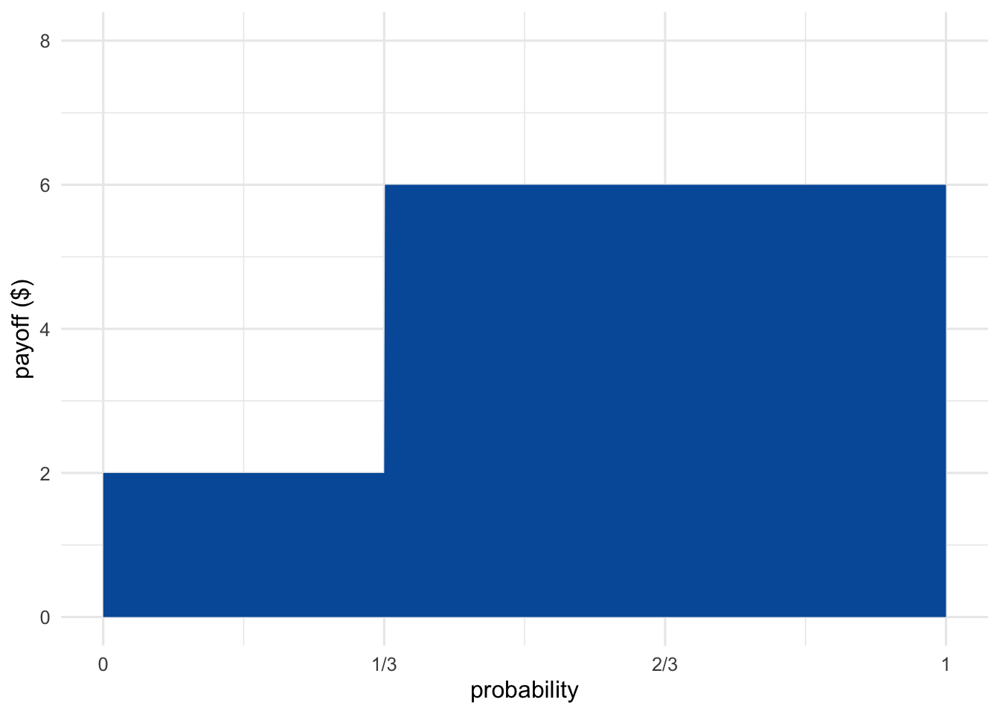
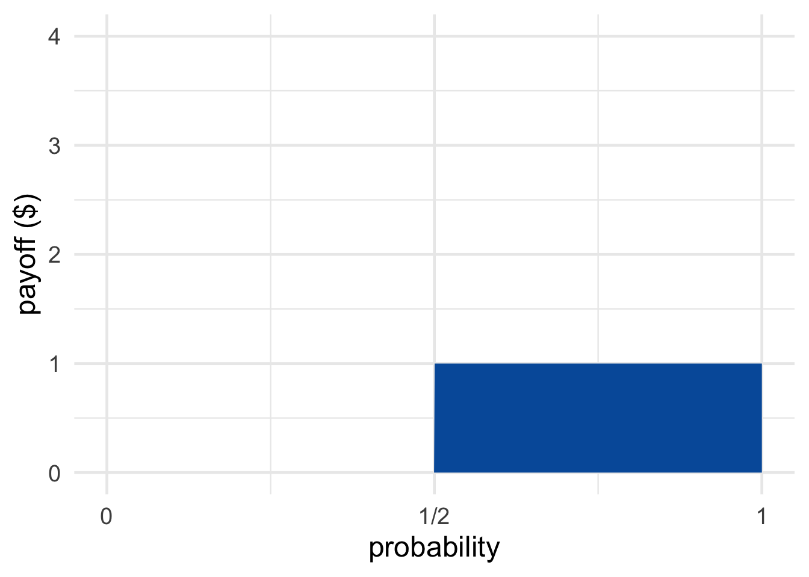
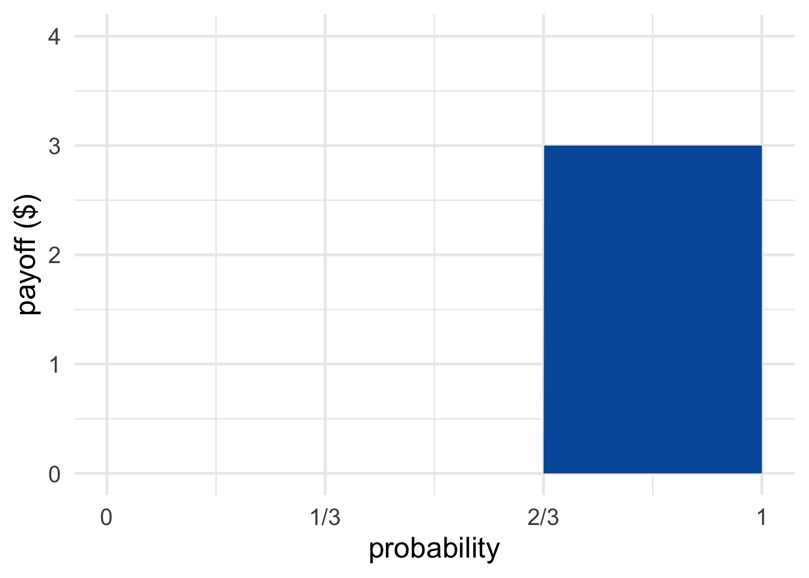
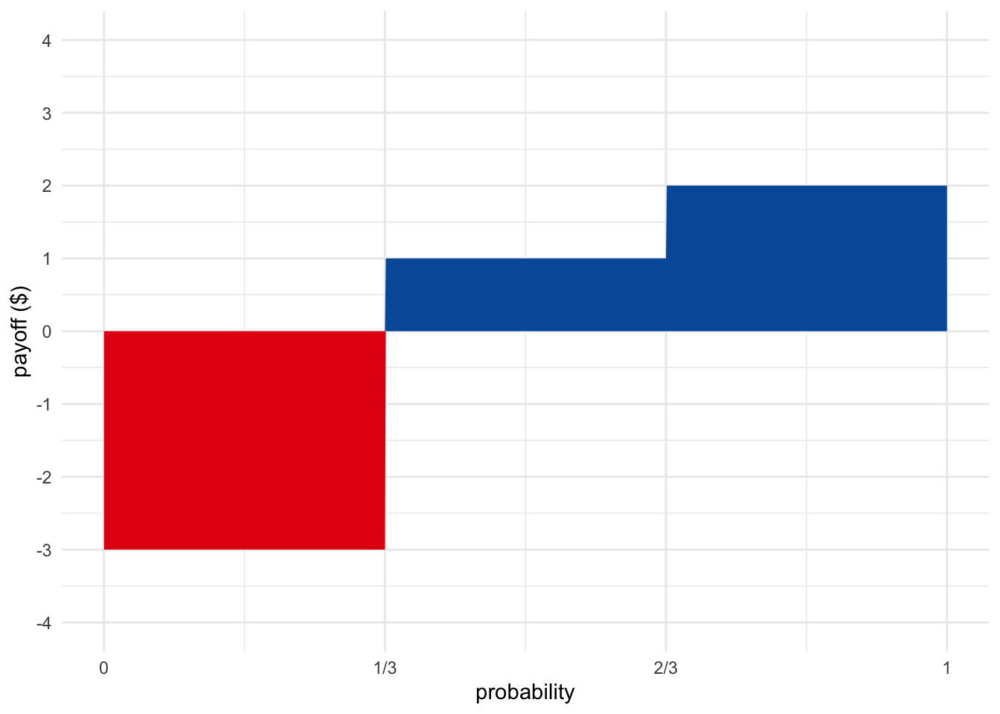
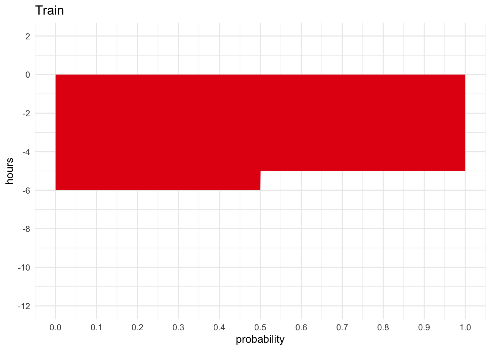
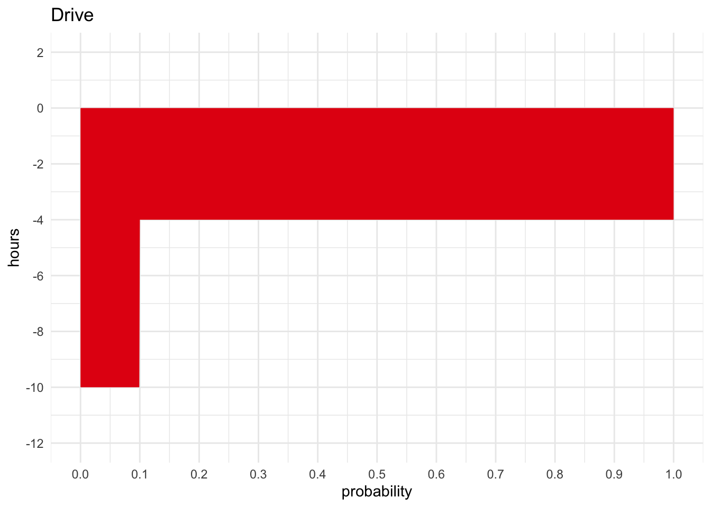

We’ve been thinking a lot about what conclusions our evidence supports. But a lot of reasoning is practical: it’s not just about what to believe, but about what you should do. Once you know how likely the various possible outcomes of a decision are, how do you make your choice?
Suppose you have a free ticket to play one game at the local casino. You can choose either the Coin Game or the Die Game.
Which game should you play?
The Coin Game has better odds: a \(1/2\) chance of winning vs. just \(1/3\) in the Die Game. But the Die Game promises a bigger payoff: \(\$3\) rather than just \(\$1\). So there are conflicting arguments here. The odds favour the first choice, while the potential payoffs favour the second. How do you reconcile these considerations and come to a decision?
Well, let’s think about what would happen in the long run if you played each game over and over.
Suppose you played the Coin Game over and over, a hundred times. Half the time you’d win \(\$1\), and half the time you’d win nothing. So after a hundred plays, you’d probably win about \(\$50\), which is an average of \(\$0.50\) per play.
Now suppose you played the Die Game a hundred times instead. A third of the time you’d win \(\$3\), and the other two thirds of the time you’d win nothing. So after a hundred plays you’d have won about \(\$100\), an average of about \(\$1\) per play.
In technical terms, this means the Die Game has a higher expected value. In the long run, you’d expect to win about \(\$1\) per play in the Die Game, as opposed to \(\$0.50\) for the Coin Game.
So the Die Game is the more advantageous one, on this analysis. On average, people tend to win more playing that game.
To calculate the expected value of an option, we multiply each payoff by its probability, and then sum up the results. For example, our analysis of the Coin Game can be written this way: \[ \begin{aligned} \p(\$1) \times \$1 + \p(\$0) \times \$0 &= (1/2)(\$1) + (1/2)(\$0)\\ &= \$0.50. \end{aligned} \] And for the Die Game: \[ \begin{aligned} \p(\$3) \times \$3 + \p(\$0) \times \$0 &= (1/3)(\$3) + (2/3)(\$0)\\ &= \$1. \end{aligned} \]
Sometimes a gamble has the potential to lose money, so we use a negative number for the “payoff”. For example, suppose the Die Game is modified so that you have to pay \(\$3\) if the die lands \(1, 2, 3\), or \(4\). Then we calculate: \[ \begin{aligned} \p(\$3) \times \$3 + \p(-\$3) \times -\$3 &= (1/3)(\$3) + (2/3)(-\$3)\\ &= -\$1. \end{aligned} \]
In general, the formula for a game with possible payoffs \(\$x\) and \(\$y\) is: \[ \p(\$x) \times \$x + \p(\$y) \times \$y. \]
Notice that expected values aren’t necessarily what you might think from the name. The expected value of a game isn’t necessarily the amount you expect to win playing it. If you play the Die Game, you’ll either win \(\$3\) or nothing. But the expected value is \(\$1\). So you actually know for certain ahead of time that you won’t win the expected value, \(\$1\).
The expected value isn’t the amount you expect to win from a game. It’s the amount you expect to win on average, in the long run, if you play the game over and over.
We can visualize these long run averages as the area in a diagram. Figure 11.1 shows a gamble with a \(1/3\) chance of paying \(\$2\), and a \(2/3\) chance of paying \(\$6\).
Figure 11.1: A gamble with a \(1/3\) chance of paying \(\$2\), and a \(2/3\) chance of paying \(\$6\)
 Figure 11.2: The Coin Game (top) and the Die Game (bottom)
There are two rectangular regions, one for each possible outcome. The width of each rectangle is the probability of the corresponding outcome, and the height is the payoff. So each rectangle’s area is one term in the expected value’s sum: \[ 1/3 \times \$2 + 2/3 \times \$6. \] The expected value is thus the area of the two rectangles together, i.e. the area of the blue region (about \(\$4.67\) in this example).
The Coin Game and the Die Game are visualized in Figure 11.2.
We started this chapter wondering how to reconcile conflicting arguments. The Coin Game has better odds, but the Die Game has a greater potential payoff.
Well, a rectangle’s area can be enlarged by increasing either its width or its height. Likewise, a payoff’s contribution to expected value can be increased either by increasing its amount or by increasing its probability.
So the expected value formula answers our opening question by giving equal weight to the two competing factors. Width (probability) and height (payoff) are treated the same: neither one is given greater weight. We just multiply one against the other and take the total area that results.
 Figure 11.3: A gamble with one negative payoff, one positive
Sometimes a decision loses money. We use negative dollar amounts to represent losses. For example, imagine the Coin Game is modified so that you lose \(\$2\) if the coin lands tails. Then the expected value is: \[ 1/2 \times \$1 + 1/2 \times -\$2 = -\$1/2.\]
In our diagrams, potential losses extend below the \(x\)-axis. And we colour them red as a reminder that they are to be subtracted from the area above the \(x\)-axis. To get the expected value, we subtract the red area from the blue area.
Most casino games have mor than two possible payoffs. For that matter, most decisions in life have more than two possible outcomes. If you buy insurance for your phone, it could end up saving you \(\$0\), or it could save you \(\$100\), or it might save you \(\$150\), etc.
So the official definition of expected monetary value is:
Given an act \(A\) with possible consequences \(\$x_1, \$x_2, \ldots, \$x_n\), the expected monetary value of \(A\) is: \[ \begin{aligned} \E(A) &= \p(\$x_1) \times \$x_1 + \p(\$x_2) \times \$x_2 + \ldots + \p(\$x_n) \times \$x_n. \end{aligned} \]
 Figure 11.4: A gamble with three possible outcomes
For example, suppose a fair die will be rolled and you will win $1 if it lands on a low number, $2 if it’s a middling number. If it’s a high number, you lose $3. Then: \[ \begin{aligned} \E(A) &= (1/3)(\$1) + (1/3)(\$2) + (1/3)(-\$3)\\ &= \$1/3 + \$2/3 - \$1\\ &= \$0. \end{aligned} \]
Gambles with more than two outcomes are visualized the same as before. We just use three or more reactangles, one for each possible outcome.
Imagine a variation of the Coin Game, where you win \(\$1\) if the coin lands heads, and you pay \(\$1\) if it lands tails. You might be able to guess, the expected value of this game is \(\$0\): \[ \begin{aligned} \p(\$1) \times \$1 + \p(-\$1) \times -\$1 &= (1/2)(\$1) + (1/2)(-\$1)\\ &= 0. \end{aligned} \] If you played over and over again, you’d break even in the long run. Half the time you’d win a dollar, and the other half of the time you’d pay a dollar back.
So if someone asked you to pay in order to play this game, that would seem unfair. Why pay to play if you don’t expect to win?
But for a game like the Die Game, asking people to pay to play does seem fair. In the long run, the casino is going to lose an average of \(\$1\) per play. So it’s only fair that they ask people to pay \(\$1\) to play that game. In the long run they’ll break even. (Of course, a real casino will demand more so they can turn a profit.)
In general, a game’s fair price is thought to be its expected value. If the expected value is \(\$3\), it’s fair to pay \(\$3\) to play. If the expected value is \(-\$3\), it’s fair to “pay” \(-\$3\) to play. Meaning they should pay you \(\$3\) to play.
Notice that the expected value of paying the fair price is always \(\$0\). Suppose you pay \(\$1\) to play the original Die Game, for example. Because $1 is automatically deducted from your winnings, the possible consequences are now \(\$3 - \$1 = \$2\) or \(\$0 - \$1 = -\$1\). So the expected value of paying $1 to play is: \[ \begin{aligned} (1/3)(\$2) + (2/3)(-\$1) &= \$2/3 - \$2/3\\ &= \$0. \end{aligned} \]
That makes sense: if it’s a fair price, you shouldn’t have any advantage over the casino. You don’t stand to gain or lose money in the long run, if you pay the fair price to play over and over.
The casino is in the same position. For them, the losses and gains are reversed: a roll of five or six loses them $3, and otherwise they lose nothing. So if you pay them \(\$1\) to play, they either lose \(\$2\) in the end or gain \(\$1\): \[ \begin{aligned} (1/3)(-\$2) + (2/3)(\$1) &= -\$2/3 + \$2/3\\ &= \$0. \end{aligned} \]
Since nobody has an advantage, it’s a fair deal.
Money isn’t everything, of course. People value lots of other things, like their health, their family and friends, and their free time. The concept of expected value can be applied to other goods besides money, as long as they’re quantifiable.
Imagine you’re taking a trip to Ottawa and you can either drive or go by train. If you take the train, it’s pretty predictable: it’s always a five or six hour ride, with equal probability. If you drive, it’s less predictable. Nine times out of ten it’s just a four hour drive. But one time in ten, an accident causes a traffic jam and it ends up being a ten hour drive.
 Figure 11.5: Take the train to Ottawa or drive?
If all you care about is spending as little time on the road as possible, should you take the train or drive? \[ \begin{aligned} \E(\mbox{Train}) &= \p(-5{\mbox{ hr}}) \times -5{\mbox{ hr}}+ \p(-6{\mbox{ hr}}) \times -6{\mbox{ hr}}\\ &= (1/2)(-5{\mbox{ hr}}) + (1/2)(-6{\mbox{ hr}})\\ &= -11/2{\mbox{ hr}}\\ &= -5.5{\mbox{ hr}},\\ \E(\mbox{Drive}) &= \p(-4{\mbox{ hr}}) \times -4{\mbox{ hr}}+ \p(-10{\mbox{ hr}}) \times -10{\mbox{ hr}}\\ &= (9/10)(-4{\mbox{ hr}}) + (1/10)(-10{\mbox{ hr}})\\ &= -46/10{\mbox{ hr}}\\ &= -4.6{\mbox{ hr}}. \end{aligned} \] So driving has a higher expected value—measured in terms of free time, rather than money.
Notice that both options have negative expected value in this example. After all, you’re bound to lose time travelling no matter what. Sometimes you don’t have any choice but to accept a loss. But you can still choose the option that minimizes your expected loss, i.e. maximizes expected value.
Many decision problems can be represented in a table. Suppose you’re choosing between the following two gambles, based on the roll of a fair, six-sided die.
A decision table has a row for each option and a column for each possible outcome. Each cell of the table then contains the payoff for that combination of act and outcome:
| \(1\) or \(2\) | \(3\) or \(4\) | \(5\) or \(6\) | |
|---|---|---|---|
| \(A\) | \(\$3\) | \(\$1\) | \(-\$1\) |
| \(B\) | \(\$1\) | \(\$2\) | \(\$0\) |
We can also add in the probability for each cell:
| \(1\) or \(2\) | \(3\) or \(4\) | \(5\) or \(6\) | |
|---|---|---|---|
| \(A\) | \(1/3\), \(\$3\) | \(1/3\), \(\$1\) | \(1/3\), \(-\$1\) |
| \(B\) | \(1/3\), \(\$3\) | \(1/3\), \(-\$3\) | \(1/3\), \(\$0\) |
Now calculating expected values is just a matter of multiplying the numbers within each cell, and then adding up across each row:
| \(1\) or \(2\) | \(3\) or \(4\) | \(5\) or \(6\) | Expected Value | |
|---|---|---|---|---|
| \(A\) | \(1/3\), \(\$3\) | \(1/3\), \(\$1\) | \(1/3\), \(-\$1\) | \(\$1\) |
| \(B\) | \(1/3\), \(\$3\) | \(1/3\), \(-\$3\) | \(1/3\), \(\$0\) | \(\$0\) |
Note that the probabilities don’t have to be the same from row to row. The casino might choose to use a different die depending on how you bet, for example. Suppose if you choose \(A\), they’ll use a loaded die to eliminate your edge:
| \(1\) or \(2\) | \(3\) or \(4\) | \(5\) or \(6\) | Expected Value | |
|---|---|---|---|---|
| \(A\) | \(1/6\), \(\$3\) | \(1/6\), \(\$1\) | \(4/6\), \(-\$1\) | \(\$0\) |
| \(B\) | \(1/3\), \(\$3\) | \(1/3\), \(-\$3\) | \(1/3\), \(\$0\) | \(\$0\) |
Now that the die is loaded towards \(5\) or \(6\) if you choose \(A\), the expected value of choosing \(A\) is nil: \(\$0\).
Once in a while you can avoid calculating expected values altogether. Consider this decision problem:
| \(1\) or \(2\) | \(3\) or \(4\) | \(5\) or \(6\) | |
|---|---|---|---|
| \(A\) | \(\$3\) | \(\$1\) | \(-\$1\) |
| \(B\) | \(\$1\) | \(\$0\) | \(-\$3\) |
We don’t even have to put in the probabilities to make our decision here. Option \(A\) is clearly better, because it has a better payoff no matter how the die lands. In every column, row \(A\) has a larger payoff than row \(B\). So \(A\) is a better decision no matter what.
When one option has a better payoff than another no matter what happens, we say the first option dominates the second. In terms of a table, the dominant option has a higher payoff in every column.
If \(A\) dominates \(B\), then \(A\) must have higher expected value than \(B\).
Dominant options don’t come up very often in practice. Real decision problems tend to be harder than that. But they do come up sometimes. (They’re also important in more advanced, theoretical topics: Chapter 17 covers one example.)
Which of the following best describes expected monetary value?
What is the expected monetary value of playing a slot machine that costs \(\$100\) to play, and has a \(1/25\) chance of paying out \(\$500\)? (The rest of the time it pays nothing.)
Suppose a slot machine pays off \(\$25\) a fiftieth of the time and costs a \(\$1\) to play, and a video poker machine pays off \(\$10\) a twentieth of the time and costs \(\$2\) to play. Which machine is the better bet in terms of expected monetary value?
You’re considering downloading a new game for your phone. The game costs \(\$0.99\). But as a promotion, the first \(50,000\) downloaders are being entered in a fair lottery with a \(\$10,000\) cash prize.
This exercise is based on Exercise 2 from p. 95 of Ian Hacking’s An Introduction to Probability & Inductive Logic.
If you know you’ll be one of the first \(50,000\) downloaders, what is the expected monetary value of downloading the game?
A local casino offers a game which costs \(\$2\) to play. A fair coin is flipped up to three times, and the payouts work as follows:
What is the expected monetary value of this game?
When is the following statement true: the expected monetary value of a gamble is also one of its possible payoffs.
Suppose you can bet on either of two dogs: Santa’s Little Helper or She’s the Fastest. If you bet on Santa’s Little Helper and he wins, you get \(\$5\). If he loses you pay \(\$2\). If you bet on She’s the Fastest and she loses, you pay \(\$10\). The two dogs have the same chance of winning.
This problem is based on Exercise 1 from p. 85 of Michael D. Resnik’s excellent book, Choices.
How much would a winning bet on She’s the Fastest have to pay for her to be the better bet?
Suppose the government is deciding whether to create a vaccination program to prevent a potential epidemic of Zika virus. If there is an epidemic, it will cost the country \(\$1,000\) million (for medical care, lost work-hours, etc.). The vaccination program would cost \(\$40\) million.
This problem is based on an example from p. 86 of Michael D. Resnik’s Choices.
If they don’t create the vaccination program, there is a \(9/10\) chance of an epidemic. If they do create the vaccination program, there is still a \(1/10\) chance of an epidemic.
Suppose Ontario is deciding whether to enact a new tax. If the tax is enacted, it will bring in \(\$700\) million in revenue.
But it could also hurt the economy. The chance of harm to the economy is small, just \(1/5\). But it would cost the country \(\$1,200\) million in lost earnings. (The \(\$700\) million in revenue would still be gained, partially offsetting this loss.)
Treat gains as positive and losses as negative.
The government also has the option of conducting a study before deciding whether to enact the new tax. If the study’s findings are bad news, that means the chance of harm to the economy is actually double what they thought. If its findings are good news, then the chance of harm to the economy is actually half of what they thought.
Suppose your university is considering a tuition increase. If the increase happens, it will bring in \(\$7\) million.
But it could also hurt the university’s reputation. The chance of harm to the university’s reputation is \(3/5\), and it would cost the university \(\$20\) million in lost donations if it happened. The \(\$7\) million in tuition would still be gained though, partially offsetting this loss.
Treat gains as positive and losses as negative.
The university has the option of conducting a study before deciding whether to increase tuition. If the study’s findings are bad, the chance of harm to the university’s reputation is increased by \(1/5\). If its findings are good, the chance of harm is decreased by \(1/5\).
Noree has a phone worth \(\$60\) and a tablet worth \(\$240\). The probability she’ll have to replace the phone (because of damage/loss/theft/etc.) is \(1/5\). The probability she’ll have to replace the tablet is \(1/6\). These probabilities are independent.
An insurance policy that costs \(\$60\) will cover the cost of replacing both items.
William has a phone worth \(\$60\) and a tablet worth \(\$540\). The probability he’ll have to replace the phone (because of damage/loss/theft/etc.) is \(1/3\). The probability he’ll have to replace the tablet is \(1/5\). These probabilities are independent.
An insurance policy that costs \(\$100\) will cover the cost of replacing both items.
Zhi has a netbook worth \(\$350\) and a desktop computer worth \(\$1400\). The probability that she’ll spill liquid on the desktop is \(1/7\) and the probability that she’ll spill liquid on the netbook is \(1/5\). These probabilities are independent, and in either case she will have to replace the damaged device.
An insurance policy that costs \(\$200\) will cover the cost of replacing either/both items if they are damaged from a spill. Treat all losses as negative.
Suppose you play poker with five of your friends every week, but you’re not very good. For every week you win, there are eight weeks where you lose. You don’t play for real money though, so it’s usually no big deal.
But next week your friends want to have a real game where everyone puts in \(\$15\). The winner keeps all the money, everyone else loses their \(\$15\).
Now suppose you see a book that teaches people to improve their poker game. The book costs \(\$30\), but it will increase your odds of winning.
Suppose you’ve accumulated enough loyalty points at your local drug store to trade them in for \(\$100\) worth of merchandise.
But the pharmacy offers you a second option. You can trade your points for an opportunity to join a lottery along with all the other customers who’ve accumulated the same number of points. The lottery will have one randomly selected winner, and the prize is \(\$10,000\) worth of merchandise. There would be \(300\) people in the lottery (including you).
Treat losing the lottery as a monetary loss: \(-\$100\).
Consider the following game: I’m going to flip a fair coin up to three times. If it comes up heads on the first toss, the game is over and you win \(\$2\). If it comes up heads for the first time on the second toss, you win \(\$40\) and the game is over. If the first heads comes up on the third toss, you win \(\$800\) and the game is over. If it comes up tails every time, you have to pay me \(\$x\). What does \(x\) have to be to make the game fair.
Consider the following game. I’m going to roll a fair die up to two times. If it comes up 1 on the first roll you win $\(x\) and the game is over. Otherwise, I roll it again. If it comes up 2 on the second roll, you win $\(6x\) and the game is over. Otherwise you pay me $6 and the game is over. What does \(x\) have to be for this game to be fair?
Consider the following game.
I draw a card from a fair deck. If it’s a \(2\) or \(3\), you pay me \(\$x\) times the face value: \(\$2x\) if it’s a \(2\), \(\$3x\) if it’s a \(3\).
If the first card is neither a \(2\) nor a \(3\), I draw a second card. If it’s a \(7\), you win \(\$7x\). Otherwise you pay me \(\$1\) and the game is over.
What does \(x\) have to be for this game to be fair?
Suppose there are three urns, \(A\), \(B\), and \(C\). Each urn has \(100\) marbles: some are black, the rest are white. You don’t know how many black marbles there are in each urn. But you do know two things:
How many black marbles are there in urn \(A\)?
You’re on a game show where there are three closed doors. One of the doors has a large cash prize behind it, though you don’t know how much exactly. The other two doors have nothing. You have two options:
Which option has higher expected value? Justify your answer.
Hint: first calculate the expected value of each option if the cash prize is \(\$100\). Then do the same calculations for a prize of \(\$1,000\). Then explain how to generalize this reasoning to any cash prize.
Some workplaces hold a weekly lottery. Suppose there are 30 people in your workplace lottery, and each person pays in $5 every Monday. A finalist is chosen at random every Friday, for three weeks. Then, on the fourth Friday, one of the three finalists from the previous three weeks is chosen at random. That person gets all the prize money.
What is the expected value of being in this lottery? Explain the reasoning behind your answer.
Tip: it’s possible to answer this question without doing any calculations.
Prove that paying the fair price for an option always results in expected value of \(\$0\). In other words, if \(E(A) = \$x\), then \(E(\mbox{Pay } \$x \mbox{ for } A) = \$0\).
Prove that if \(A\) dominates \(B\), then \(A\) has higher expected value: \(E(A) > E(B)\).